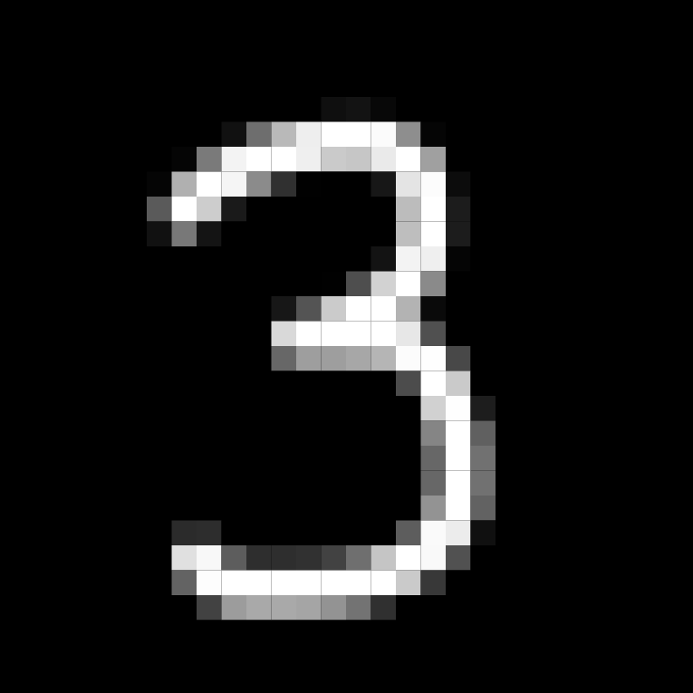
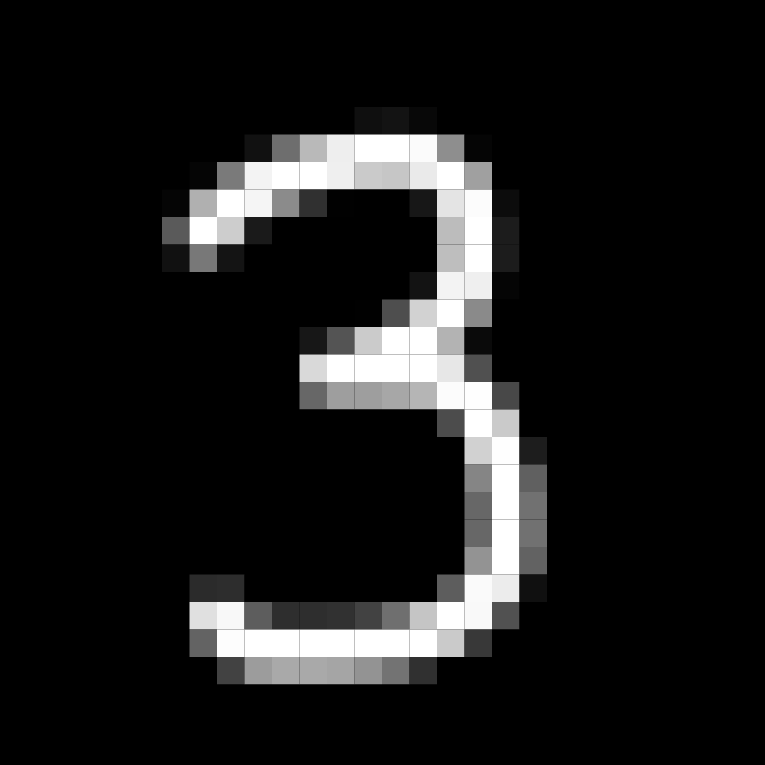
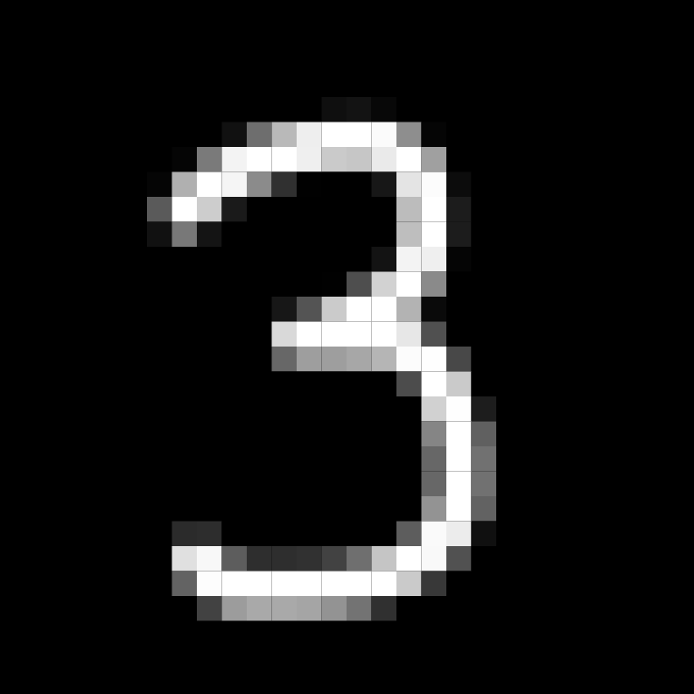

This classifier was built entirely by Thomas Castleman and Johnny Lindbergh.
The processed input from the on-screen canvas is passed through a feed-forward neural network, which makes the classification. The network exists in a serialized state on the server, and is reconstructed client-side.
The trained network was obtained using Castleman and Lindbergh's original classifier, written in C, which was built to train on the MNIST database.
Before an image can be passed through the network, it must be compressed to a 28x28 resolution, to match the MNIST format.
Upon request to classify, the image data from the canvas is reduced to this resolution by averaging the pixel intensity of subsections of the image (using the p5.js graphics library). This resulting image is then centered by its center of mass, to match the format of training data from MNIST.

From here the image is vectorized and passed through the network.
The current network in deployment has three layers, with 784 input neurons (28x28 images), 50 hidden neurons, and 10 output neurons. It was trained on 60,000 training pairs over 10 epochs, using batch gradient descent.
Upon testing over 10,000 previously unseen pairs, the network achieved 89.1% accuracy overall.
All functionality, including matrix operations, was implemented by Castleman and Lindbergh, and no libraries beyond the standard C libraries were used.